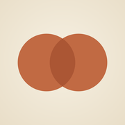
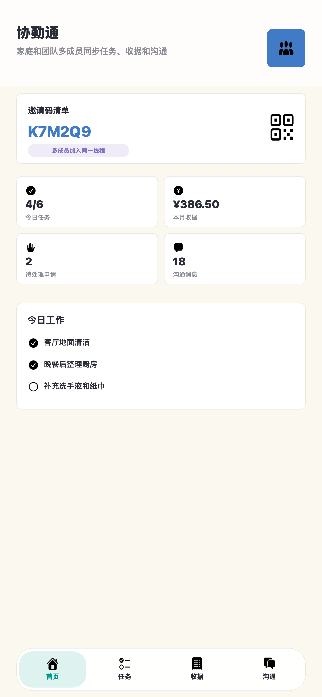
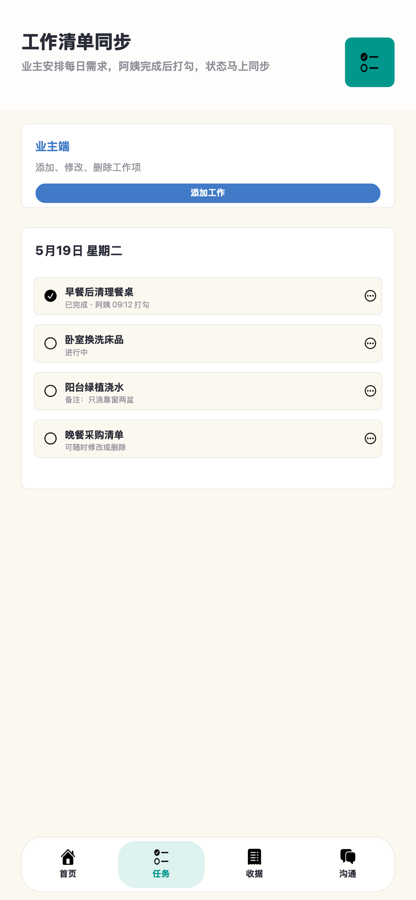
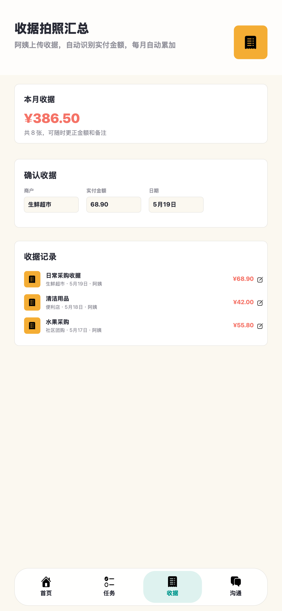
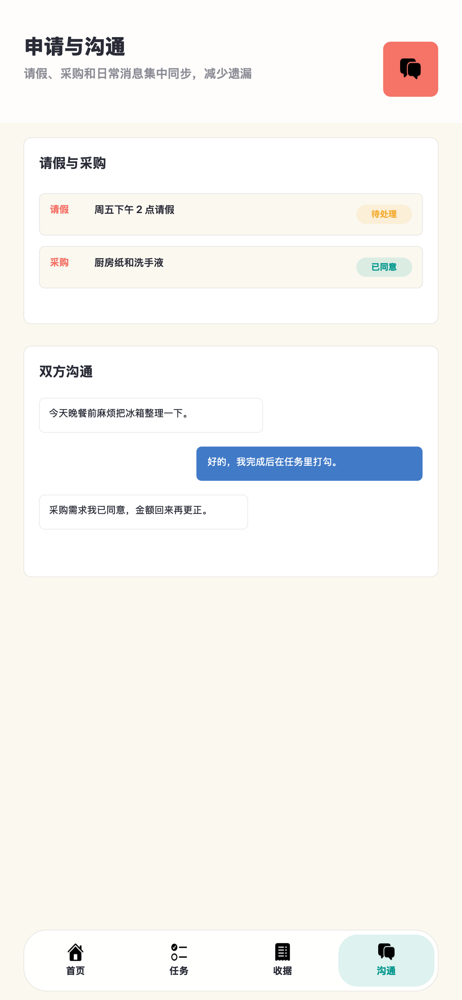

业主 / 阿姨 / 团队协作
协勤通使用说明
适用于 iPhone 版和 Android 版。两端连接同一个家庭/团队后台，任务、收据、申请、沟通、签到和日历会同步。
一、快速开始
业主创建协作空间
- 打开 App，选择身份为“业主”。
- 填写姓名和家庭/团队名称。
- 点击“业主创建空间”。
- 把生成的邀请码发给阿姨或其他成员。
阿姨或成员加入
- 打开 App，选择“阿姨”或自定义角色。
- 填写姓名。
- 输入业主给的邀请码。
- 点击“用邀请码加入”。
二、主要页面预览




三、工作日历
2026年6月
预计 12 天 · 实际 10 天
日一二三四五六
1
2
3
4
5
6
四、任务、收据和申请
| 功能 | 业主可以做什么 | 阿姨可以做什么 |
|---|---|---|
| 工作任务 | 发布任务、添加照片、设置提醒、查看已读和完成状态。 | 查看任务、查看图片、打勾完成、接收新任务提醒。 |
| 收据小票 | 上传、查看阿姨上传的小票、按月统计金额、修改或删除记录。 | 拍照或相册上传小票，识别金额后可更正。 |
| 申请 | 查看请假/采购申请，批准或拒绝，必要时可重新处理。 | 提交请假或采购申请，修改自己的申请。 |
| 沟通 | 群聊、私聊、发送图片、撤回或删除自己的消息。 | 群聊、私聊、发送图片、保存图片到相册。 |
| 签到 | 查看成员签到记录，在日历中查看某天记录或手动补记实际工作日。 | 点击“立即签到”，系统保存时间和定位坐标。 |
五、Android 安装说明
- 把 APK 文件发送到华为或其他 Android 手机。
- 在手机文件管理器或微信下载列表中点开 APK。
- 如果提示“禁止安装未知来源应用”，进入系统设置，允许当前来源安装。
- 安装后打开协勤通，输入同一个邀请码，即可和 iPhone 端同步。
注意：Android 和 iPhone 必须使用同一个服务器和同一个邀请码。若提示连接失败，先确认手机网络可访问 api.ayi-home.cn。
六、常见问题
为什么日历上“实际天数”会变？
实际天数由两部分合并计算：GPS 签到日期，以及业主手动标记的实际工作日。同一天只计一次。
手动实际工作日和 GPS 签到有什么区别？
GPS 签到有成员、时间和位置坐标；手动实际工作日只是业主补记工作日期，不包含定位数据。
收据图片为什么要点开才看清？
列表中显示缩略图或占位，点击收据照片可打开大图。这样可以减少流量并提高列表加载速度。
一个业主能管理多个成员吗？
可以。同一个邀请码加入的成员都在同一协作空间内，业主可以看到成员身份、任务操作、收据上传和申请处理记录。